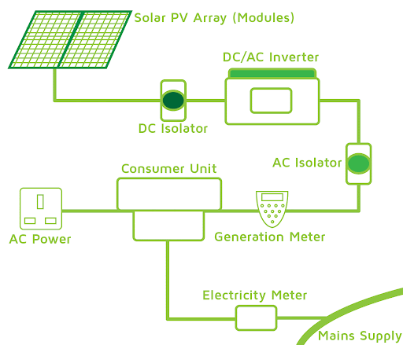
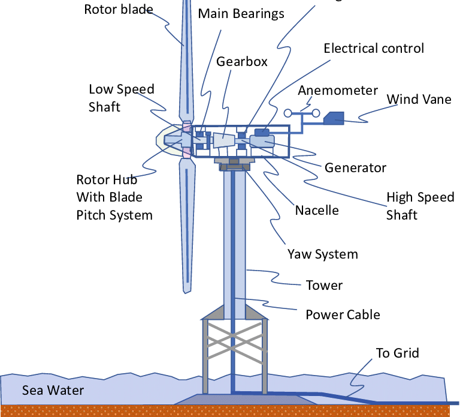

🔋 Renewable Energy Systems
Renewable energy systems generate electrical power from natural sources that are continually replenished. Key technologies include solar, wind, hydro, geothermal, and biomass systems.
🌠1. Solar Energy
- Photovoltaic (PV) Cells: Convert sunlight directly to DC electricity
- Inverter: Converts DC to AC for grid use
- Maximum Power Point Tracking (MPPT): Optimizes energy extraction

🌬️ 2. Wind Energy
- Wind Turbine: Converts kinetic energy of wind into mechanical power
- Generator: Converts mechanical power into electrical energy
- Pitch & Yaw Control: Optimizes turbine orientation and efficiency

🌊 3. Hydropower
- Dam: Stores water potential energy
- Turbine: Converts falling water energy into rotation
- Generator: Produces electrical energy from rotational motion
🔥 4. Biomass & Geothermal
- Biomass: Organic material combusted or digested to generate heat and electricity
- Geothermal: Heat from Earth's core used to generate steam and drive turbines
🔌 5. Grid Integration
- Storage Systems: Batteries and flywheels stabilize output
- Power Electronics: Converters and inverters manage voltage and frequency
- Smart Inverters: Enable dynamic control and grid compliance
📉 6. Performance Metrics
- Capacity Factor: Actual output vs maximum possible
- Efficiency: Useful energy output divided by input
- Levelized Cost of Energy (LCOE): Total cost over system lifetime per kWh
🧪 7. Interactive Curve: Solar Output Over Time
📘 Quiz
Q1: What does MPPT do in solar systems?
Answer: Maximizes power output from the PV array.
Q2: What component converts wind energy into electrical energy?
Answer: Generator
Q3: Name one advantage of smart inverters.
Answer: Improve grid stability and support voltage/frequency control.